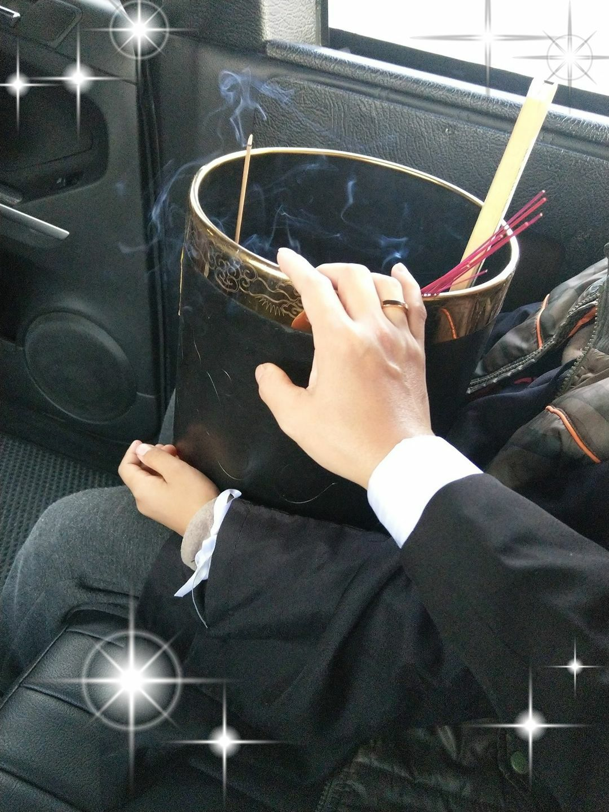

關於我們
單程行旅執行長-Jacky
「在經歷生命驟變的時刻，如何給逝者一個莊嚴、慎重地告別儀式，是家屬賦予生命禮儀者重要的任務，而滿滿的不捨與追思則是家屬唯一想傳達的事」。但在這樣傷痛的時刻，大部分的家屬都是徬徨不安的，所以必須先安定家屬的心，給予溫暖的關懷後才能進行溝通，從中了解家族的信仰及希望舉辦的儀式，也因此「單程行旅禮儀公司」可提供符合家屬需求的安葬儀式，不論是佛教、道教、基督教、天主教、甚至是環保葬（樹葬、花葬、海葬）都能提供最專業的服務及諮詢，並能在適當的時候給予建議，並留意相關細節，以確保儀式進行更加流暢。
圓滿逝者，安定生者，追思傳愛到天際
圓滿逝者，安定生者，追思傳愛到天際。
在生命消逝的瞬間，在痛失親友的時刻，最需要的是一雙溫暖的手，托住悲傷不知所措的心，這是Jacky在陪伴阿嬤走完人生最後一哩路的過程裡，看著家人徬徨、無助與傷心的深刻體會，也讓富有同情心的他從此走向生命禮儀行業的道路，並在殯葬公司歷練多年後，選擇自行創業，成立了「單程行旅禮儀公司」。
「單程行旅」 秉持著真誠、真心、真意、對待家屬如同對侍自己親人般的理念，從禮儀流程、禮俗禁忌到入殮安葬等相關專業，在圓滿逝者的過程中，成為家屬安定的力量，協助他們無憾的送走至親，用「溫暖人心」的初衷，為傳統制式的殯葬行業注入新的活水。
溫暖至親最後一哩路送行者
「單程行旅」為廣大消費者服務的工作人員平均年齡雖然只有三十八歲 ，但每一個人在殯葬業工作的平均年資都有十年之多，這是單程行旅的堅持，希望每個夥伴除了有一顆熱忱溫暖的心，個個都必須有喪禮服務專業證照，如此一來才能做好每一件家屬的委託，並給予家屬多一份安心的品質保障，在目前為數眾多的生命禮儀業者中，「單程行旅」是少數能做到的公司。
溫暖至親最後一哩路送行者
在Jacky的心中，專業與溫暖並重的生命禮儀，是他創辦「單程行旅」的唯一信念，也因此在經手的送行案件中，大大撫慰了許多家屬的不安與悲傷，即使在籌辦儀式的過程中再辛苦繁忙，只要家屬一句感謝，對Jacky與夥伴來說就甚麼都值得了，所以「單程行旅」會一直秉持這樣的理念前行，成為生命禮儀業中最有溫度的送行者。